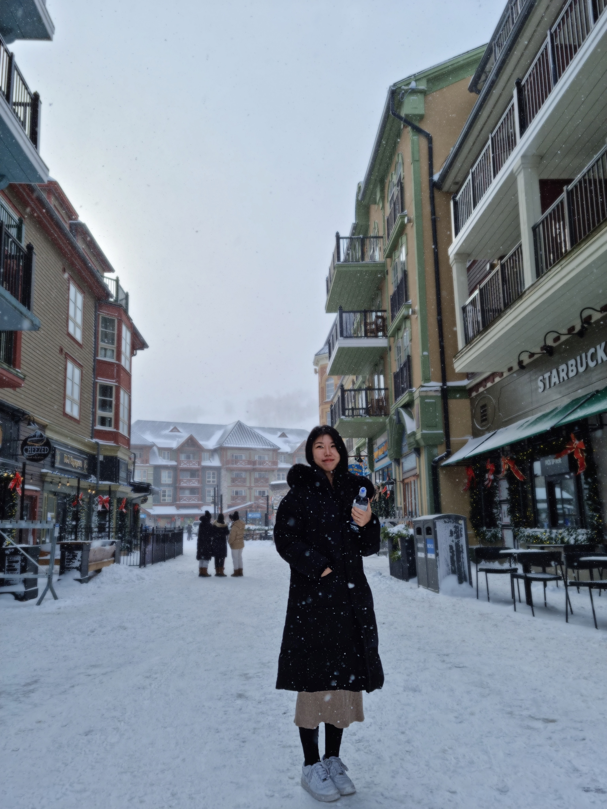

About Me

Yujin Park
I am a Ph.D. student in the Department of Statistics at Ewha Womans University, under the supervision of Professor Jae Keun Yoo.
My research interests include Sufficient dimension reduction, Functional data analysis, machine learning, and data science.
Work Experience
- 2022.7 ~ 2023.1 Visiting research student at Universy of Windsor
- 2020.4 ~ 2020.12 Researcher at Seoul National University Hospital